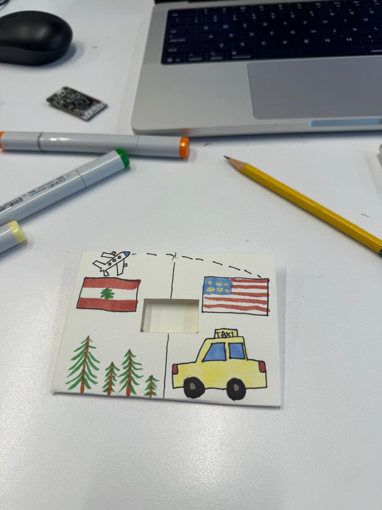
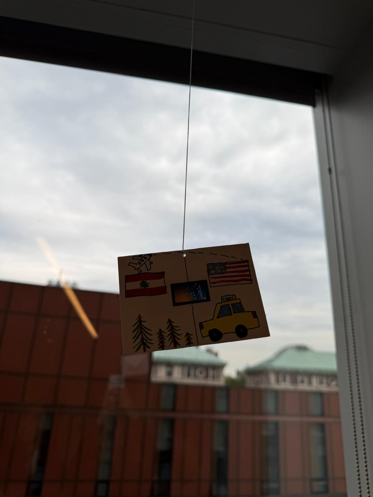

Migration
The things we bring with us, even when they don’t fit in a suitcase.
What home feels like
When I think about what I miss in Lebanon, I think about waking up in the mountains. The smell of coffee. Looking out of my window at the cedars. My grandparents insisting that I eat more, then asking what I want to eat next. Those small things are what make home feel like home to me.
I wanted this project to be about my move from Lebanon to New York, but I wanted it to carry those details too. The coffee cup, the cedar, and the little grandparents on the screen stand for things I miss. The idea is that moving somewhere new doesn’t mean starting from nothing. You bring people, habits, and memories with you, and they become part of the life you build there.
The piece running in class
The animation starts with a Lebanese stone house. Pieces leave it at different times, become small keepsakes, and travel across the screen. They gradually come together as a tall glass building in New York. One sun rises on the Lebanon side, crosses the sky, and sets on the New York side.
Finding the right way to tell it
The first version was too abstract. Particles moved from left to right, but I couldn’t really see the two homes or understand the change between them. I wanted to watch the old home break apart and the new one take shape.
I moved toward photographic building images because the drawn versions still felt too much like simple sketches. The contrast between a small stone home and a luxury glass skyscraper made the difference between the two places much clearer. Neither image is my actual home; they represent the two settings.
The moving dots also needed more meaning. I turned them into cedars, coffee cups, family figures, and suitcases. The small screen means these have to be simple pixel shapes, but their identities matter: the same traveling piece becomes part of the new building when it arrives.
I added orange and blue skies to make the warm and cool contrast stronger. At first there were two suns, but I wanted it to be the same sun moving between both places. I also shortened the journey to roughly 40 seconds so someone could stay with it long enough to see the transformation.
A different journey each time
The homes are known, but the routes between them change. The program uses random() to choose when pieces leave, how their paths bend, how long they take, and whether they slow down or briefly turn back. A few wait longer before leaving. Eventually, all of them arrive.
This is what makes the sketch generative. The ESP32 calculates the movement as it runs; it isn’t playing a saved animation. After the new building has been visible for a while, it fades and the house returns for another journey.
Working with a very small screen
Getting the board connected was one of the first practical problems. At one point it wasn’t appearing as a USB device, and the screen wasn’t lighting up. Reconnecting the USB-C cable, including turning the connector over, got it working. Seeing the original Wi-Fi and voltage demo also helped distinguish the board’s factory program from the artwork I was trying to upload.
The main visual challenge was making the story readable at only 240 × 135 pixels. Detailed buildings had to be resized and stored as image data the display could use. Each image is divided into small pieces, with a matching destination for every traveler. The keepsake appears during the journey, then blends into the new building near the end.
The program draws a complete frame off-screen before sending it to the display to reduce flicker. It also limits how many pieces can travel at once. These choices help the movement stay readable without losing the feeling of separate, unpredictable journeys.
Taking it off the desk
I drew the envelope to continue the story around the screen: the Lebanese and American flags, cedars, a yellow taxi, and a plane following a dashed route between the two sides. The first photo below is from the drawing stage. The opening is still empty because the ESP32 hadn’t been attached yet.


With the board in place, the screen sits between the two drawn countries. The envelope gives the animation a physical setting, while the small moving keepsakes carry the more personal part of the story.
View the code and replication instructions on GitHub →
The README includes the hardware, library versions, upload steps, and a close-up GIF of the screen.